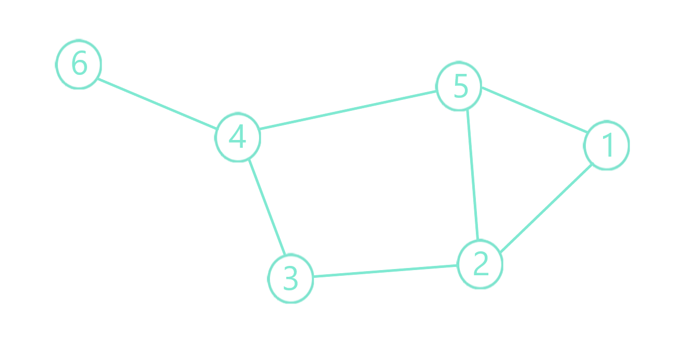
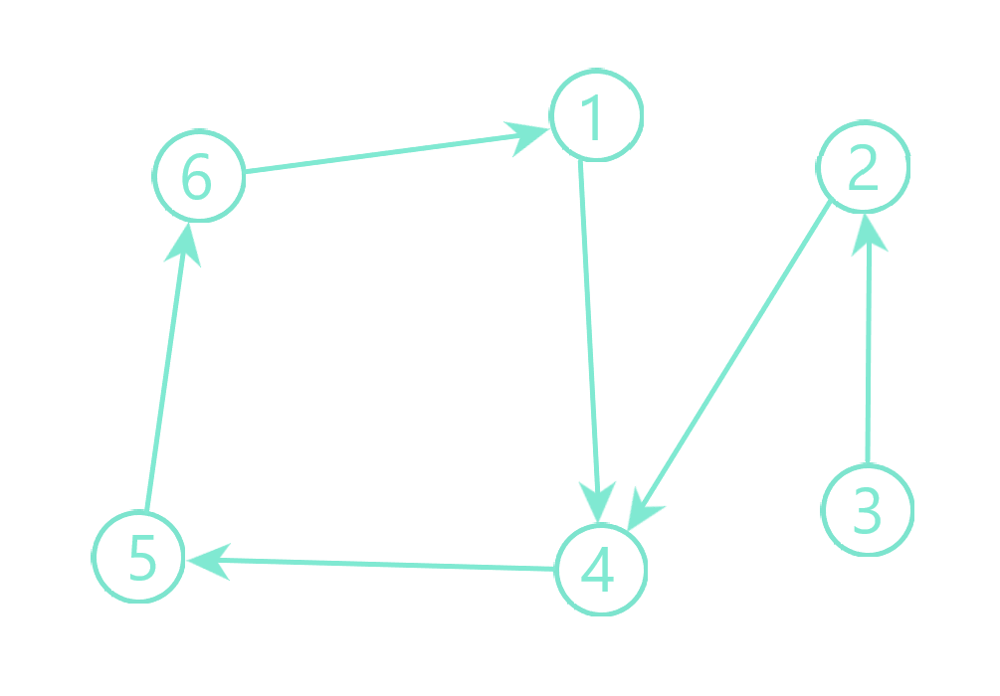
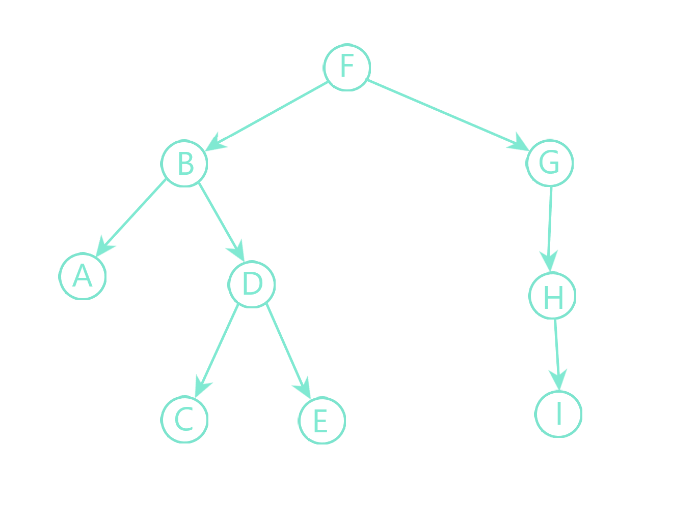
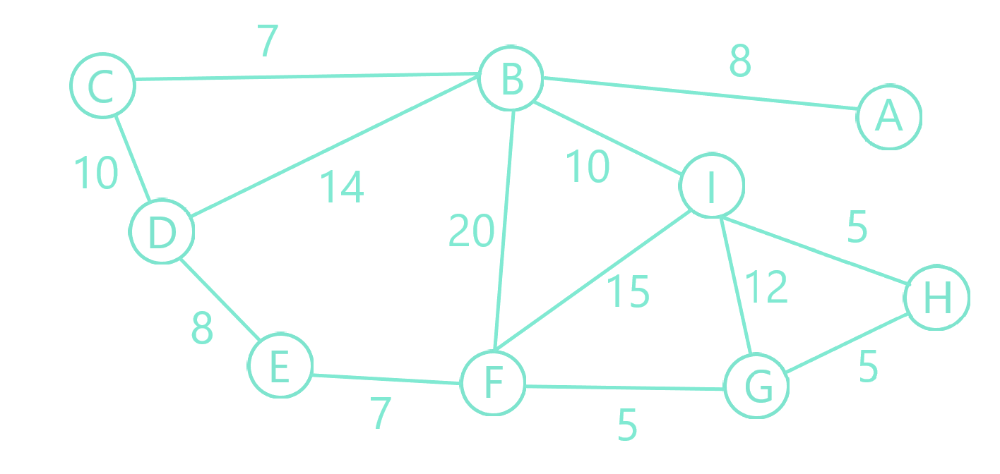

“Azi teoria grafurilor a devenit o disciplină majoră, deşi nu-şi găseşte locul într-o clasificare dogmatică a capitolelor matematicii. Folosirea teoriei grafurilor în domenii variate, de la chimie, la economie, de la studiul reţelelor electrice la critica textelor şi la politică, îi dau azi un prestigiu de care cel ce clasifică ştiinţele trebuie să ţină seama”.(Grigore C. Moisil)
In matematică și informatică, teoria grafurilor studiază proprietățile grafurilor. Un graf este o mulțime de obiecte (numite noduri) legate între ele printr-o mulțime de muchii cărora le pot fi atribuite direcții (în acest caz, se spune că graful este orientat). Un graf poate fi reprezentat geometric ca o mulțime de puncte legate între ele prin linii (de obicei curbe). Dezvoltarea teoriei grafurilor a pornit de la probleme legate de jocuri și amuzamente matematice menite a testa ingeniozitatea. Acestea au atras atenția unor matematicieni experimentați precum Euler, Hamilton, Cayley, Birkhoff iar cu trecerea anilor teoria grafurilor a devenit un domeniu bogat in rezultate și de o surprinzătoare varietate și aplicabilitate.
   
Grafurile au o importanță imensă în informatică, de exemplu: - în unele problemele de sortare și căutare; - elementele mulțimii pe care se face sortarea sau căutarea se pot reprezenta prin noduri într-un graf; - schema logică a unui program se poate reprezenta printr-un graf orientat în care o instrucțiune sau un bloc de instrucțiuni este reprezentat printr-un nod, iar muchiile direcționate reprezintă calea de execuție; - în programarea orientată pe obiecte, ierarhia obiectelor (claselor) unui program poate fi reprezentată printr-un graf în care fiecare nod reprezintă o clasă, iar muchiile reprezintă relații între acestea (derivări, agregări);
Euler
Jocurile și amuzamentele matematice au fost punctul de plecare în ceea ce astăzi numim „teoria grafurilor”. Dezvoltându-se la început paralel cu algebra, această ramură a științei a căpătat în timp atât formă cât și conținut propriu, devenind un tot unitar bine concurat și bine fundamentat teoretic, cu largă aplicare practică.
Printre primii care s-au ocupat de acest domeniu au fost König și Berge. Aceștia au stabilit primele noțiuni de limbaj specific domeniului.
Sylvester
„Data nasterii” teoriei grafurilor poate fi considerată anul 1736, când matematicianul elvețian Leonhard Euler a publicat un articol în limba latină în care a clasificat „problema celor șapte poduri”, stabilind astfel o metodă pentru rezolvarea unei întregi clase de probleme.
Cu 200 ani mai târziu apărea la Leipzig prima carte de teorie a grafurilor al cărei autor este matematicianul maghiar Dénes Kőnig.
În amintirea contribuției lui Euler unele noțiuni și tipuri de grafuri de care acesta s-a ocupat sunt denumite de către Koreg lanț eulerian ,graf eulerian,etc. Un alt matematician care s-a ocupat de aceleași probleme ca și Euler, dar care și-a publicat rezolvările cercetărilor sale în anul 1873 a fost Carl Hierholzer.
Alte izvoare ale teoriei grafurilor sunt: fizica- studiul rețelelor electrice de catre fizicianul Kirchoff, geografia-problema celor 4 culori, aplicațiile teoriei grafurilor în chimie(inițiate de Cayley), probleme hamiltoniene, grafuri planare.
Termenul graf a fost folosit pentru prima dată în sensul său actual în 1878 de matematicianul Sylvester. Teoria grafurilor este o ramură destul de nouă, a teoriei mulțimilor, care s-a dovedit foarte utilă și cu aplicații în domeniu variate : economie, chimie organică, organizare, psihologie anumite domenii ale artei etc.
Problema celor șapte poduri din Königsberg este o problemă de matematică de importanță istorică. Leonhard Euler a arătat în 1736 că nu are soluție, punând bazele teoriei grafurilor și prefigurând ideea de topologie. Orașul Königsberg din Prusia (astăzi, Kaliningrad, Rusia) se întindea pe ambele mauri ale râului Pregel, cuprinzând și două insule mari legate una de cealaltă, și cu diverse alte porțiune ale orașului prin șapte poduri. Problema era de a elabora un drum prin oraș, care să traverseze fiecare dintre aceste poduri o dată și numai o dată.

Hartă a Königsbergului pe vremea lui Euler cu dispunerea efectivă a celor șapte poduri, figurând și râul Pregel și podurile
Pentru a enunța fără echivoc cerința logică a problemei, soluțiile care implică fie:
1.ajungerea pe o insulă sau într-o parte de oraș altfel decât trecând podurile, sau
2.accesarea oricărui pod fără a-l traversa până la celălalt capăt
sunt în mod explicit inacceptabile.
Euler a demonstrat că problema nu are soluție. Dificultatea cu care s-a confruntat a fost să dezvolte de o tehnică adecvată de analiză, și teste ulterioare, care să enunțe această afirmație cu rigoare matematică.
În primul rând, Euler a subliniat că alegerea drumului prin interiorul fiecărei porțiuni de oraș este irelevantă. Singura caracteristică importantă a unui traseu șirul de poduri traversate. Acest lucru i-a permis să reformuleze problema în termeni abstracți (punând bazele teoriei grafurilor), eliminând toate caracteristicile, cu excepția listei de mase de uscat și podurile de legătură. În termeni moderni, a înlocuit fiecare masă de uscat cu un „nod” sau vârf abstract, iar fiecare pod cu o legătură abstractă, o „muchie”, care servește doar pentru a înregistra care pereche de noduri (mase de uscat) este conectată prin pod. Structura matematică rezultată se numește graf.


Hartă modernă a Kaliningradului. Locațiile celorlalte poduri sunt evidențiate cu verde, în timp ce cele distruse sunt evidențiate în roșu.
În limbaj modern, Euler a arătat că posibilitatea de parcurgere a unui graf, prin traversarea fiecărei muchii exact o dată, depinde de gradele nodurilor. Gradul unui nod este numărul de muchii care îl ating. Argumentul lui Euler arată că o condiție necesară pentru mersul pe jos în forma dorită este ca graful să fie conex și să aibă exact zero sau două noduri de grad impar. Această condiție se dovedește a fi și suficientă—rezultat declarat de către Euler și demonstrat ulterior de Carl Hierholzer. Un astfel de drum este astăzi numit drum eulerian. Mai mult, dacă există noduri de grad impar, atunci orice drum eulerian va începe de la unul dintre ele și se va termina la celălalt. Întrucât graful corespunzător Königsbergului istoric are patru noduri de grad impar, el nu poate avea un drum eulerian.
În istoria matematicii, soluția lui Euler a problemei podurilor din Königsberg este considerată a fi prima teoremă din teoria grafurilor și prima demonstrație adevărată în teoria rețelelor, un domeniu considerat astăzi, în general, o ramură a combinatoricii. Alte probleme de combinatorică de alte tipuri au fost analizate încă din antichitate.
În plus, recunoașterea de către Euler că informațiile-cheie sunt numărul de poduri și lista capetelor lor (mai degrabă decât poziția exactă) prognozează dezvoltarea topologiei. Diferența dintre distribuția reală și schema grafică este un bun exemplu al ideii că topologia nu se preocupă de forma rigidă a obiectelor.
Prin urmare, așa cum constata și Euler, „geometria de poziție” nu este despre „măsurători și calcule”, ci despre ceva mult mai general. Aceasta a pus sub semnul întrebării viziunea tradițională, aristotelică, cum că matematica este o „știință a cantității”. Deși această viziune se potrivește aritmeticii și geometriei euclidiene, ea nu se potrivește cu topologia și cu caracteristicile structurale mai abstracte studiate în matematica modernă.
Filosofii au observat că demonstrația lui Euler nu este despre o abstracție sau despre un model al realității, ci direct despre aranjamentul real al podurilor. Prin urmare, certitudinea demonstrației matematice se poate aplica direct la realitate.

Cel mai bun exemplu de aplicație practică în viață reală a grafurilor neorientate sunt hărțile rutiere. Putem afla astfel cel mai scurt drum până într-un anumit punct sau care puncte de pe hartă sunt cel mai ușor accesibile.
Nodurile pot fi considerate orașe, iar muchiile drumuri; grafurile orientate pot reprezenta drumuri cu sens unic între clădiri. De asemenea, ne putem reprezenta traiectoria unei călătorii cu ajutorul unui lanț al unui graf neorientat. Teoria grafurilor are numeroase apeluri în chimie, contribuind în mare măsură la rezolvarea problemelor de numărare a grafurilor aparținând unor clase speciale. Teoria grafurilor este folosită în domenii variate: de la chimie la economie, de la studiul rețelelor electrice la critică textelor de politică, devenind o disciplină majoră.

Grafurile mai pot arăta legăturile dintre anuminte grupuri sau oameni; grafuri orientate pot arăta transferul de informații sau a unor bunuri.Un arbore genealogic este de asemena un graf neorientat.
Cablurile de înaltă tensiune care pornesc dintr-o centrală pot fi și ele reprezentate cu ușurință cu ajutorul unui graf orientat, indicând și direcția de deplasare a curentului. În acest caz centrala este un nod sursă. La fel se poate reprezenta și un sistem de canalizare, de încălzire sau rețeaua de apă curentă.
Multitudinea căilor aeriene reprezintă grafuri. Nodurile sunt intersecțiile (imaginare) și muchiile sunt rutele (imaginare). Noduri pot fi și aeroporturile.